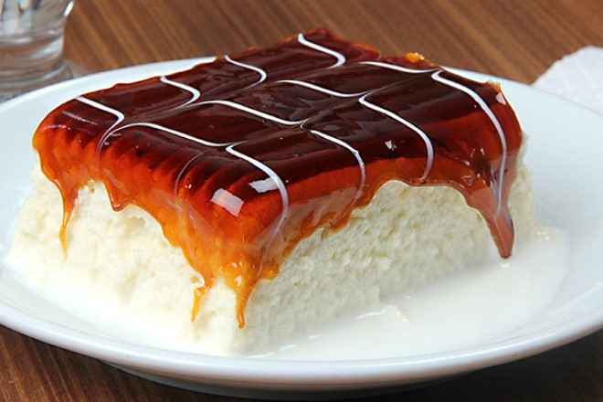

Sayfa Başı.
Sayfa Sonuna Git!
Balkanlardan Gelen Lezzet Dalgası:
Trileçe Tarifi

Orijinalinde üç süt karışımının kullanıldığı
sütlü şerbet ile hazırlanan trileçe (tirileçe), hafifliği ve sünger dokusuna sahip pandispanya kekiyle şöhreti
kısa sürede dilden dile yayılan enfes bir tatlı tarifi. Traliçe, triliçe ya da trilece diye telaffuz edenler
olsa da tatlının doğru yazımı trileçe.
Çeşitli sos ve kremalarla servis edilen versiyonlarını yerinde yiyebileceğiniz gibi trileçe tarifini ev
sıcaklığında hazırlayıp, sevdiklerinizle paylaşabilirsiniz. Biz bu sefer oyumuzu karamelli orijinal trileçe
tarifinden yana kullandık; ama siz farklı soslarla da onu deneyebilirsiniz. Tarifimizin içinde karamel sosunun
tarifini de bulabileceksiniz.
Malzemeleriyle en kolay trileçe tariflerinden biri olan bu tarifi hemen denemek isteyeceksiniz.
O zaman haydi mutfağa, trileçe tatlısı yapıyoruz!
KAÇ KİŞİLİK
8 dilim
HAZIRLAMA SÜRESİ
30 dakika
PİŞİRME SÜRESİ
35 dakika
Trileçe Tarifi İçin Malzemeler
- 5 adet büyük boy yumurta
- 6 yemek kaşığı toz şeker
- 7 yemek kaşığı un
- 1 paket kabartma tozu
- 1 paket vanilin
Şerbeti için:
- 2 su bardağı inek sütü
- 1 su bardağı keçi sütü
- 1 su bardağı manda sütü
- 1 su bardağı toz şeker
Karameli İçin:
- 2 yemek kaşığı tereyağı
- 1 paket krema
- 1 çay bardağı toz şeker (büyük çay bardağı)
Trileçe Tarifinin Pişirme Önerisi
Sütlü şerbeti için manda ve keçi sütünü
kullanmak istemezseniz, 3 su bardağı inek sütü ve 1 su bardağı krema ile de şerbetinizi hazırlayabilirsiniz.
Trileçe Tarifi Nasıl Yapılır?
- Derin bir karıştırma kasesinin içerisine yumurta ve şekeri ekleyip, şekerler eriyene ve karışımın rengi
açılıp, krema kıvamına gelene kadar çırpın.
- Un, kabartma tozu ve vanilini yumurtalı karışımın içerisine eleyerek ekleyin.
- Spatula yardımıyla kuru malzemelerin sıvı malzemelerle birleşmesi için altan üstte doğru sürekli olarak
karıştırın. Güzelce karışmış olan kek harcını yağlanmış fırın kabınıza dökün ve üzerini düzeltin.
- Trileçenin pandispanyasını önce 170 derece ısıtılmış fırında 10 dakika pişirin. 10 dakika sonunda fırın
ısısını 150 dereceye indirip 20-25 dakika kadar pişirin.
- Pişen pandispanyayı oda sıcaklığında soğumaya bırakın ve üzerine kürdan yardımıyla delikler açın.
- Sütlü şerbeti için; inek sütü, manda sütü ve keçi sütünü tencereye alın. Şekerini de ekleyip eriyene kadar
karıştırın. Kaynamaya başladıktan sonra ocağın altını kapatın ve ılımaya bırakın.
- Karameli için; ayrı bir sos tenceresinde toz şekeri kontrollü olarak eritin. Üzerine tereyağını ekleyin.
Fokurdamaya başlayan tereyağlı şekerin üzerine kremayı ekleyin ve karıştırıp ocaktan alın, soğumaya bırakın.
- Oda sıcaklığında soğumuş olan trileçe pandispanyasının üzerine ılık sütlü şerbeti ekleyin ve sütü iyice
çektikten sonra buzdolabında soğumaya bırakın.
- Bu esnada 1 paket krem şanti hazırlayın. Soğumuş olan kekinizin üzerine ince bir tabaka halinde krem şantiyi
yayın.
- Hazırlamış olduğunuz karameli de üzerine güzelce yayın.
- Ardından dilimleyin ve soğuk olarak servis edin. Afiyetler olsun!
Sayfa Başına Git!